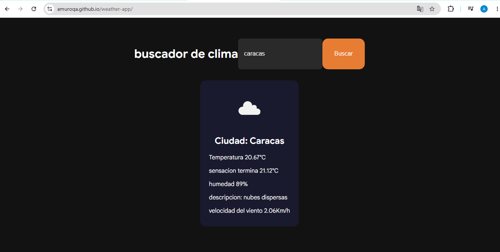

Weather app
App para ver clima de tu ciudad o pais
HTML | CSS | JavaScript
Demo GitHubVengo del mundo del testing y ahora construyo lo que antes probaba. Analista QA aprendiendo desarrollo frontend para ofrecer software que funciona bien desde el primer día.
Soy Alejandro, analista QA con más de 2 años de experiencia trabajando con empresas como Norelian y Corpoeureka, donde desarrollé habilidades en análisis de requerimientos, diseño de casos de prueba, automatización con Postman y gestión de incidencias con Jira y Azure DevOps.
Actualmente estoy en transición hacia el desarrollo frontend, aprendiendo HTML, CSS y JavaScript para combinar mi visión de calidad con la capacidad de construir interfaces web modernas y funcionales. Mi experiencia en QA me da una ventaja única: entiendo cómo debe funcionar el software antes de escribir una sola línea de código.